Otra de las cosas por las cuales se caracteriza El Colegio de Bachilleres del Estado de Quintana Roo Plantel Cancun Dos, es que tambien cuenta con distintos paraescolares, los cuales son actividades que van desde actividades deportivas hasta algunas mas enfocadas al arte como la musica y la pintura. Son ideales para encaminar al alumno a averiguar que es lo que le gusta y en que pueda tener habilidades las cuales lo ayuden a no ser un inutil bueno para nada. He aqui los paraescolares con los que cuenta el Colegio de Bachilleres del Estado de Quintana Roo Plantel Cancun Dos, y en que consiste cada uno y las actividades que se realizan.
En el paraescolar de musica los alumnos se dedican a tocar instrumentos desde instrumentos de cuerda como guitarra, violin, bajo, hasta teclados, baterias, etc. Al principio durante el primer semestre puede llegar a ser aburrido ya que durante este primer semestre de musica, unicamente se ve teoria musical, que es un pentagrama, que es un compas, la clave de sol, la clave de fa, la duracion de las notas, silencios, etc. Ya en segundo semestre se pone en practica estos conocimientos, comenzando con ejercicios de solfeo, para posteriormente hacer ejercicios de lectura de partituras para guitarra y piano. Ya en tercer semestre, inician con las partes que componen a una cancion, las cuales son el ritmo, melodia y armonia. Se hacen ejercicios de ritmo, los alumnos tambien podran tocar una melodia con cualquier instrumento y finalmente una armonia. Ya en cuarto semestre, los alumnos formaran equipos y se dedicaran a interpretar una cancion. Ya quinto y sexto semestre es una basura, a menos que seas del selectivo, puesto que si no lo eres lo unico que haras es quedarte en el salon durante media hora viendo como tocan los demas mientras tu te quedas ahi esperando a que el profe te deje salir.
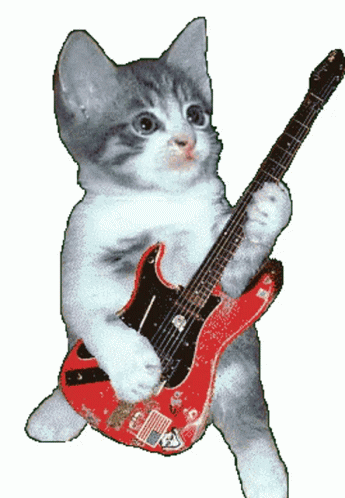 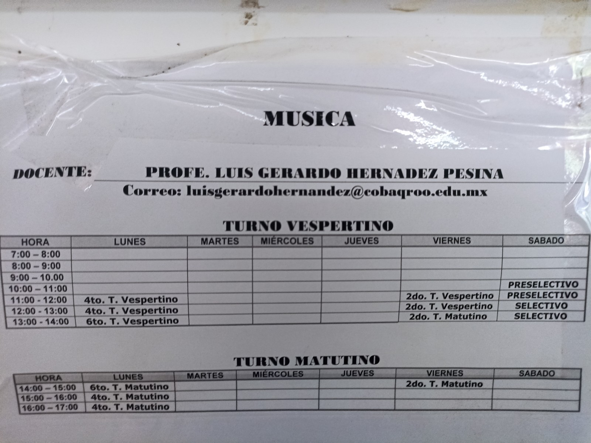 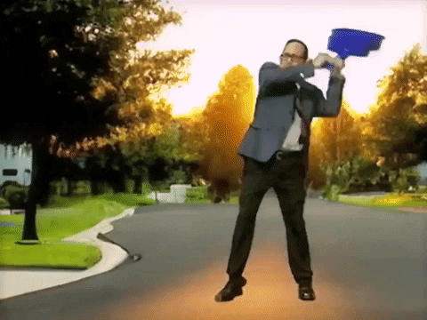En el paraescolar de pintura los alumnos se dedican a hacer pinturas. Este paraescolar es ideal para los que dibujan bien y tambien saben pintar muy bien ya que aqui lo que hacen es hacer bocetos y luego los pintan o al menos eso es lo que yo he visto. Paraescolar relajado no como los otros pues porque conisten en actividades deportivas donde te mueves mucho y sudas y terminas todo apestoso, pues por eso considero que este e suno de los mejores paraescolares pues porque a uno en verdad no le gusta el deporte. Sin duda alguna un paraescolar del Colegio de Bachilleres del Estado de Quintana Roo Plantel Cancun Dos. He aqui los horarios de todos los grupos, semestres y tambien de los del turno de la tarde:
 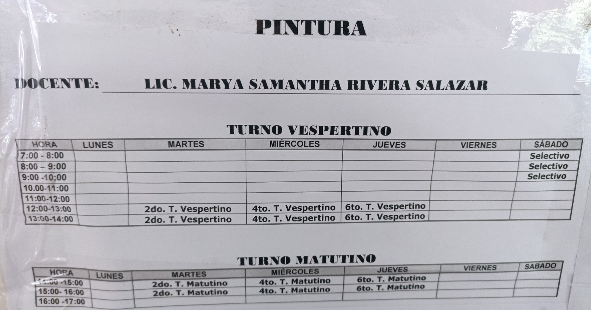
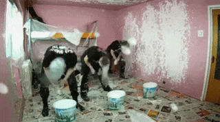
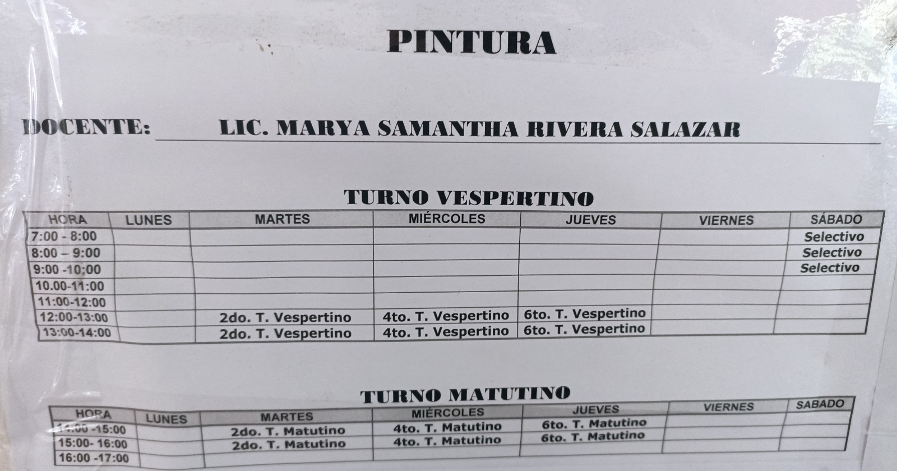
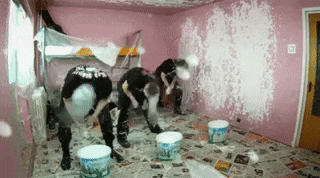
En el paraescolar de danza los alumnos llevan a cabo increibles coreografias que muestran la cultura que hay en nuestro estado. Tambien, en el paraescolar de danza no se limitan unicamente a hacer bailesitos, sino que tambien tienne una parte teorica y estudian los movimientos, lo que se necesita para bailar y las partes de un escenario, que es el lugar principal en el que se hacen bailes. En lo personal diria que ese paraescolar es una basura, pero es porque a uno no le gusta bailar. Igual se respeta a la gente a la que le guste bailar, y por ello es comprensible la razon por la cual esten en este paraescolar, pues si tu eres muy bueno en matemmaticas, lo primero que uno pensaria es que se vaya a sacar una maestria o licensiatura en matematicas o estudie alguna ingenieria. Volviendo al paraescolar de danza, diria que es unicamente un buen paraescolar solo para los que les guste bailar, por que la verdad que penita andar ahi moviendose, pero se entiende que es un arte y por ello se respeta. He aqui los horarios de ambos turnos, los semestres y grupos.
 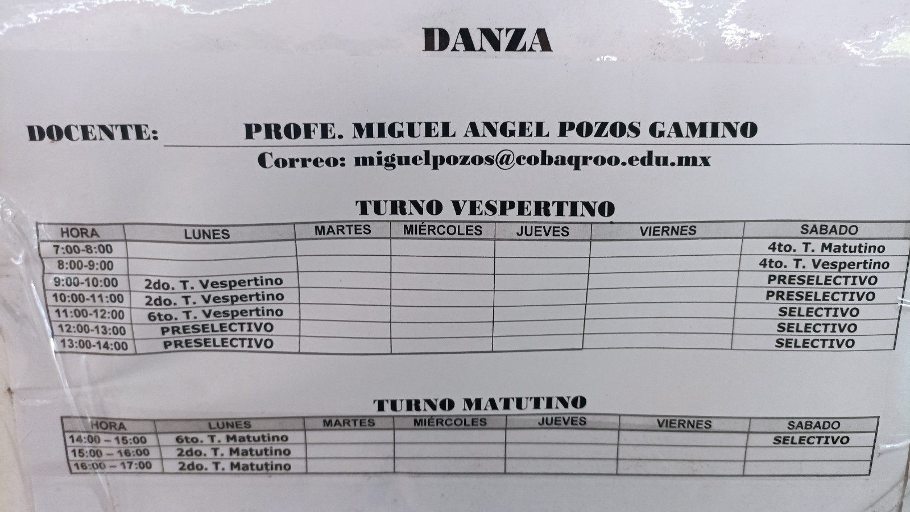
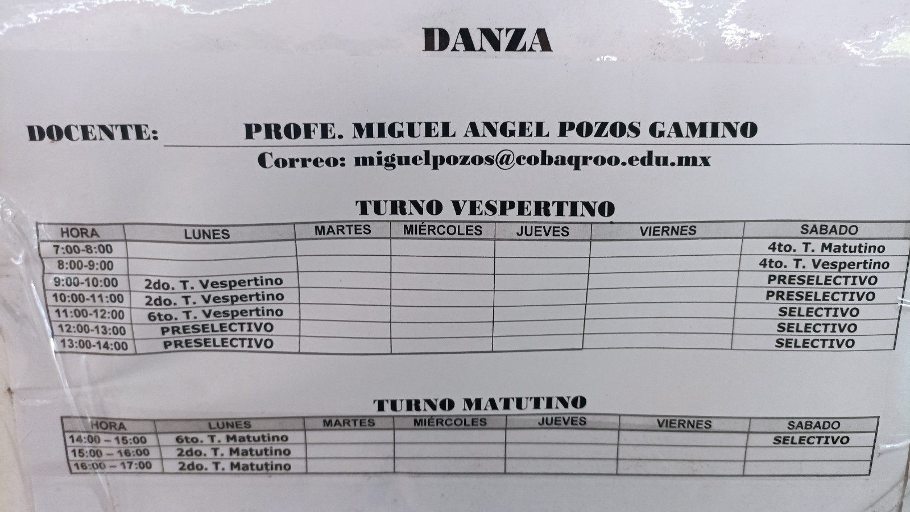

En el paraescolar de teatro, los alumnos llevan a cabo increibles actuaciones dignas de capitulos de La Rosa de Guadalupe. Los alumnos forman equipos y entre ellos pueden ya sea hacer sus propios guiones e interpretarles o unicamente limitarse a interpretar unos ya hechos, aunque eso les da chance de lograr una mejor actuacion. Ahora, por lo que he visto son realmente son muy contados los alumnos que realmente disfrutan estar en ese paraescolar y son muy pocos los que se o toman en serio. Lo poco que vi de ellos ensayar, me basto para decir que casi nadie disfruta estar ahi, unicamente los que creen que estar en ese paraescolar les dara un pase a participar en una telenovela son los que disfrutan estar ahi. Se les podia ver ensayando y veias en sus caras que no soportaban tremenda humillacion. Lo bueno que ahora ya no ensyana enfrente de los demas, creo ahora se pasaron al auditorio, pero la verdad no estoy muy seguro, tal vez incluso el paraescolar desaparecio. Ahora, si eres una persona que disfruta la actuacion y no le molesta actuar enfrente de los demas, entonces se podria decir que este es un buen paraescolar.
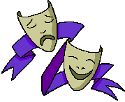 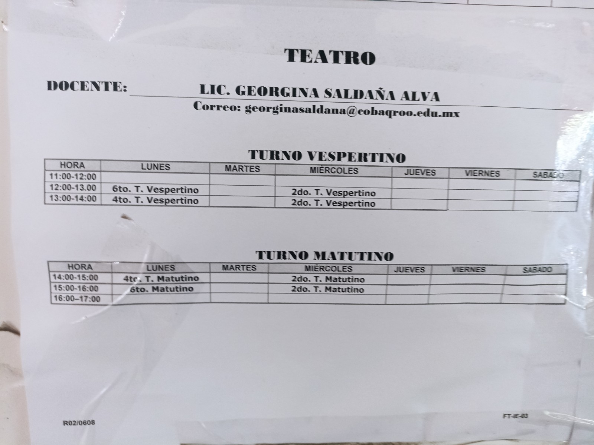 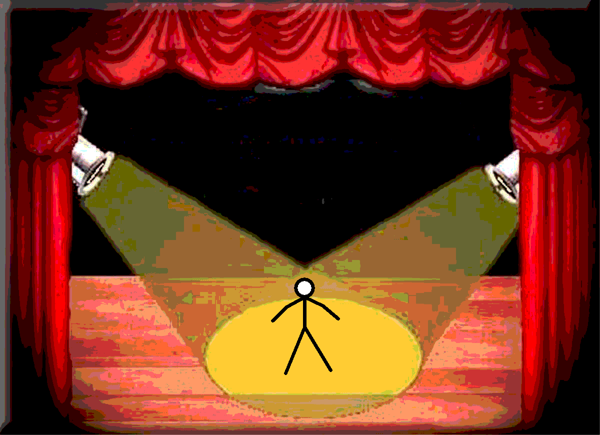En este paraescolar es similar a musica, solamente que se limitan a utilizar baquetas, tambores y trompetas. Llevan a cabo el manejo de estos instrumentos para hacer presentaciones. Luego los puedes ver en el homenaje tocando sus instrumentos mientras pasa la escolta. La verdad es que en mi estancia en El Colegio de Bachilleres del Estado de Quintana Roo Plantel Cancun Dos he visto una clase de este paraescolar, lo unico que se es que los alumnos que pertenecen a este paraescolar son los que en los homenajes tocan la trompeta y los tambores, pero al parecer esos son unicamente los del selectivo. Ahora, diria que este debe ser el paraescolar menos interesantes de los que hay, sin contar a los deportivos. Tambien, tengo entendido que tienen unos pesios horarios, quedandose hasta muy tarde en la escuela, lo cual es un completo asco tener que quedarse hasta muy tarde en la escuela solo para tomar una hora de ese paraescolar, aunque claro nadie te obliga a quedarte en esa escuela, pero tendrias que volver de tu casa a la escuela otra vez lo cual sigue siendo un asco. En conclusion, lo poco que se de este paraescolar es que los del sleectivo son los que tocan la trompeta y tambores en el homenaje y las del selectivo son las que marchan con la escolta en los homenajes, entonces puedo decir que este paraescolar es muy aburrido, a menos que te gustaria ser de la escolta o te guste tocar trompetas.
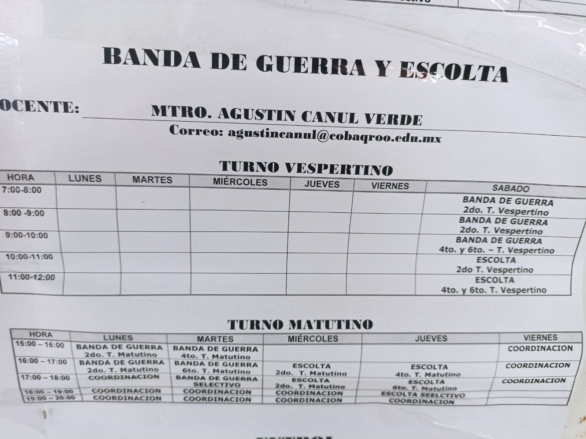Los alumnos juegan futbol en la cancha. A veces se les puede ver calentando y haciendo ejercicios. Tambien tiene su parte teorica y estudian las partes de la cancha, las reglas del futbol, cuales son las faltas, lo que esta y no esta permitido, etc. Tambien, los que pertenecen al selectivo juegan partidos contra otras escuelas. Sin duda alguna un paraescolar. Este a mi parecer es el paraescolar con mas alumnos, es que persona a la que le pregunto en que paraescolar esta, persona que me dice que esta en el paraescolar de futbol. Por lo que he visto, los alumnos que pertenecen a este paraescolar pues lo primero que hacen es que el profe los pone a calentar y luego los deja ahi y deja que se hechen unas buenas retas 🥶. Ahora, los que si juegan chido pues se supone que deben ser los del selectivo, y si he visto que algunos juegan bastante bien, aquellos alumnos del selectivo son los que luego asisten a partidos contra otras escuelas, lo mas interesante de esto es han jugado no solamente con escuelas publicas o de gobierno, sino tambien escuelas de paga. Lo que no termina de sorprenderme, es que siempre los resultados de estos partidos nunca son favorables para el Colegio de Bachilleres del Estado de Quintana Roo Plantel Cancun Dos, por lo que podria decir que la seleccion, si es que se le puede llamar asi, es peor que la Seleccion de Futbol Mexicana que asistio al mundial Qatar 2022. En conclusion, este paraescolar esta bien porque pues lo unico que hacen es calentar y luego jugar futbol, lo que se traduce en hacerse menso si el futbol no es lo tuyo y terminaste ahi por pura casualidad, pero si tu juegas muy bien al futbol entonces este paraescolar lo mas seguro es que sea de tu agrado.
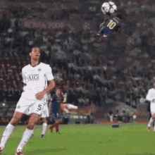 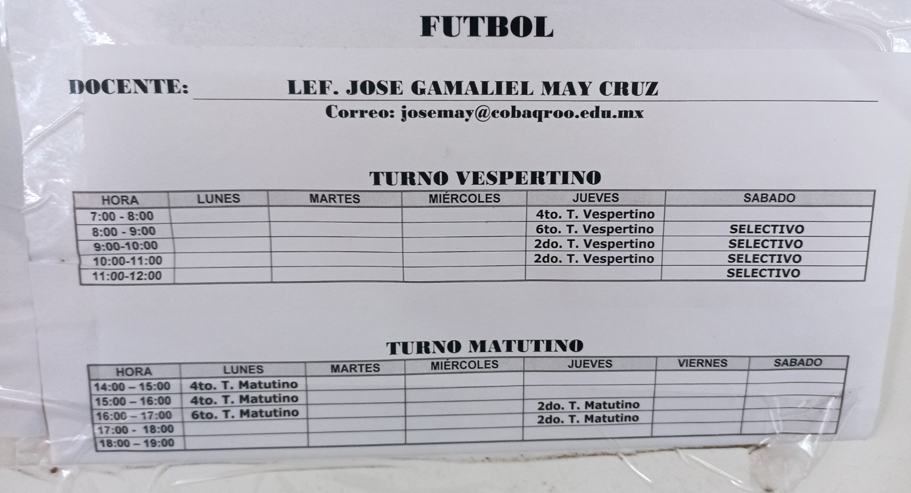Los alumnos juegan voleibol y tambien los del selectivo juegan contra otras escuelas. Este paraescolar, al igual que banda de guerra tiene unos terribles horarios, teniendo que los alumnos ya sea quedarse hasta las creo 6 de la tarde o irse a sus casas y regresar a la escuela las 6. Lo peor es que uno termina saliendo a las 7 y a esa hora asaltan y mas teniendo en cuenta la horrible ubicacion en la que esta el colegio. Hablando ahora del paraescolar, por lo que he visto los alumnos al igual que otros paraescolares deportivos, lo primero que hacen es calentar, para despues jugar volei, y creo es lo unico que hacen. Ahora, personalmente los paraescolares deportivos no son de mi agrado, y es esa la razon por la cual a estos paraescolares no los considero buenos, y este no es la excepcion, solo que a diferencia de los demas dicen que en este esta dificil hacerte menso porque el profe si te pone a hacer cosas, y solo por eso dire que este es el peor de todos en mi opinion. Conclusion, si te gusta el voleibol, pues este paraescolar sera de tu agrado, y si no pues la vas a tener complicada porque en este paarescolar si te ponen a hacer cosas. He de reconocer que los partidos del selectivo si se ponen buenos.
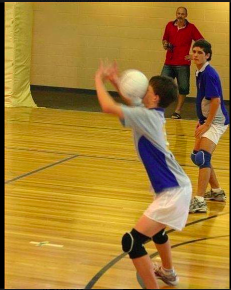 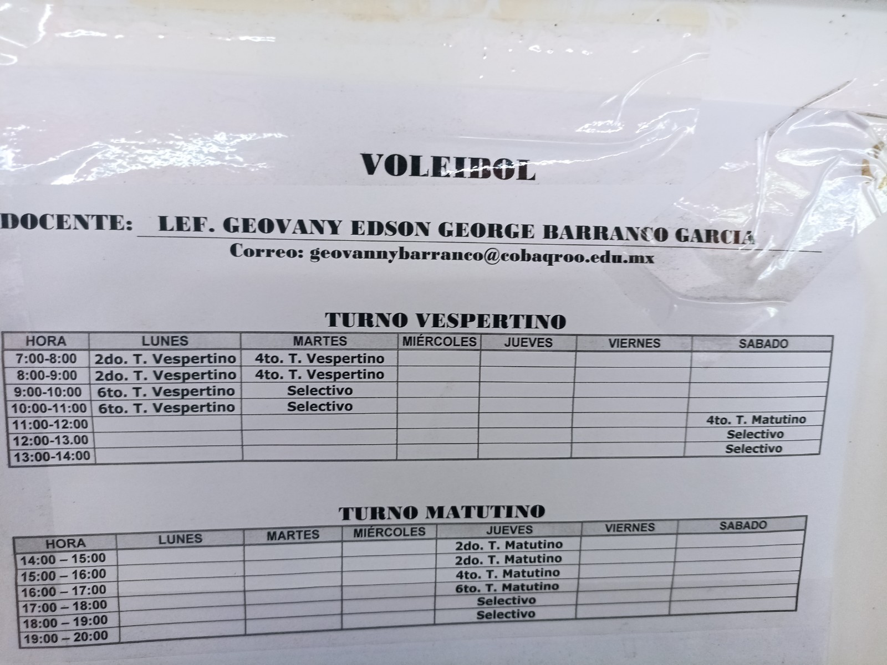 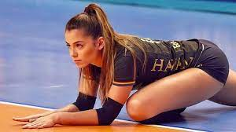